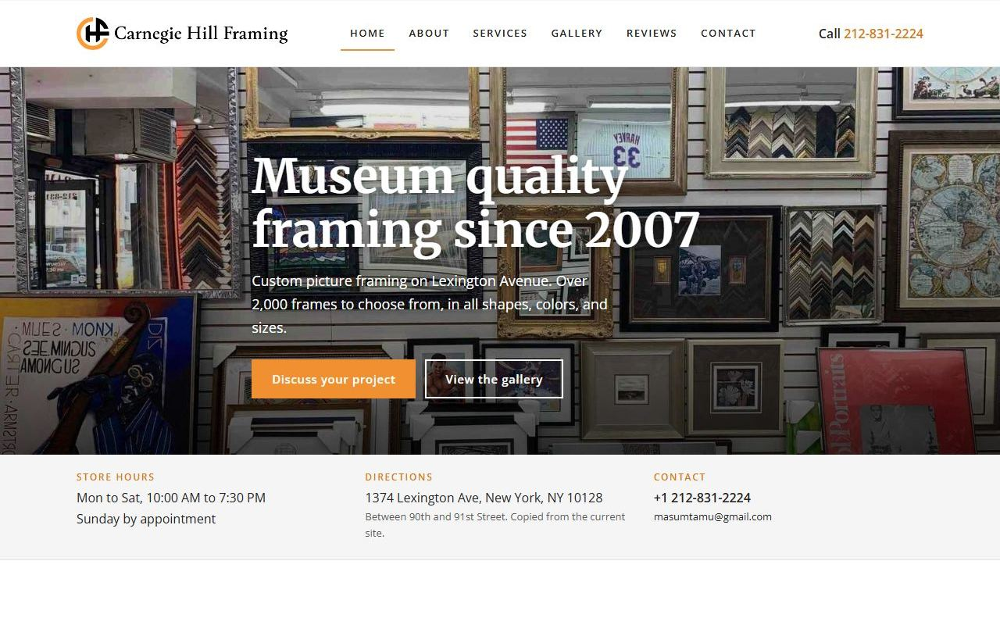
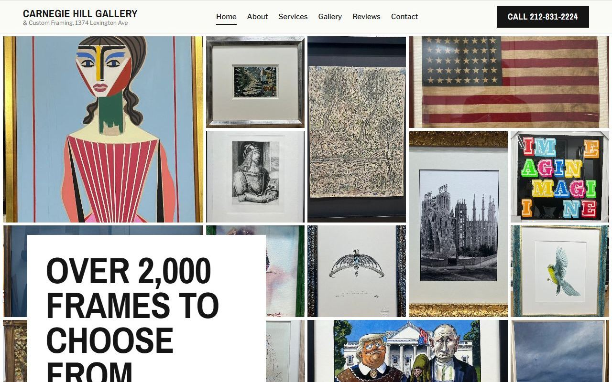
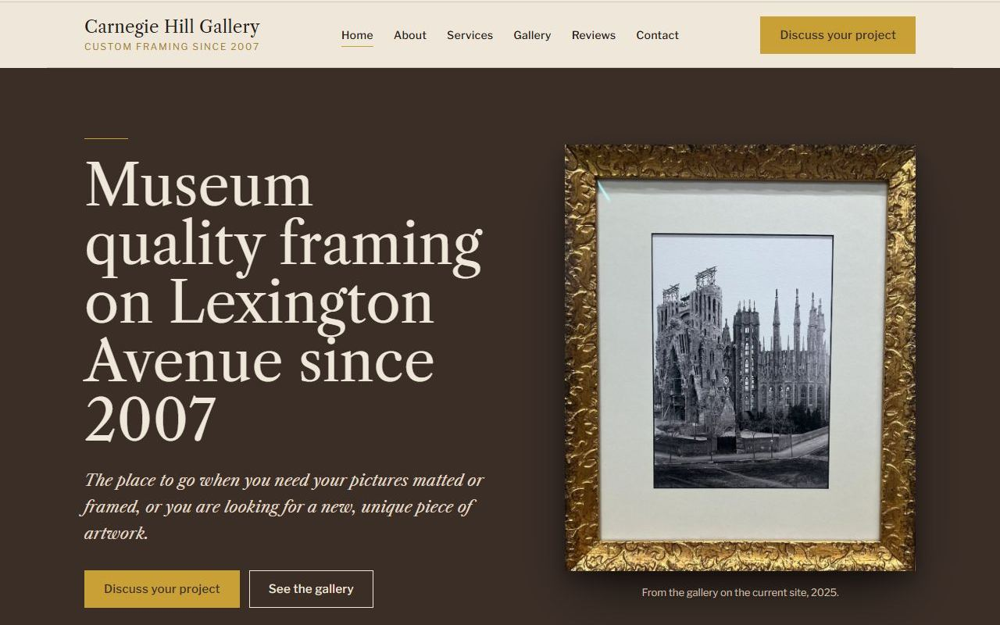
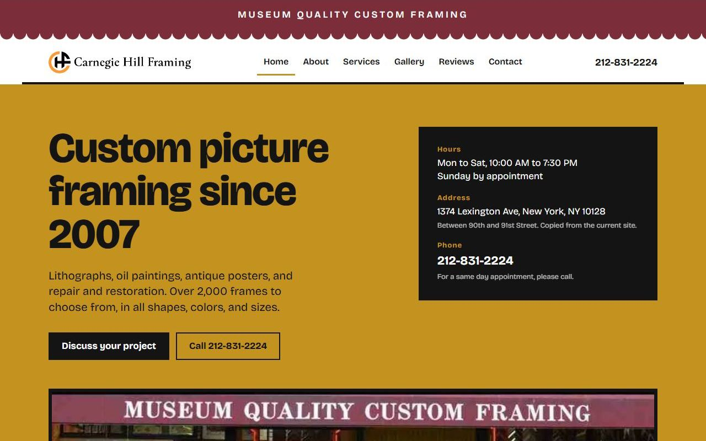

Four design concepts for nyframing.com
Each concept shows the Home page and a Gallery page. All four use the shop's real photos, the real logo, the reviews already on the current site, and the address, hours, and phone number as the current site lists them. Those details still need the owner's confirmation. Pick one, or tell us which parts of two to combine.

Familiar evolution
The current site, tidied. Same logo, same headline, same wall photo, same page order. Contact details move from the footer to just under the hero, and the reviews are the ones already on the site.

Gallery-led
The gallery is the page. A wall of real framed pieces opens the site, the headline sits on a white plate like a wall label, and every photo gets a small museum style caption. Condensed type, black and white, one gilt rule.

Heritage craft
Gilt and black. One ornate gold framed piece hangs on a dark wall beside a Caslon headline. Sections alternate between the dark wall and a linen mat. The quiet, older shop feel.

Shop front
Built from the actual storefront: the burgundy awning becomes the masthead, the yellow facade becomes the hero, and hours sit on a black sign strip underneath. Flat colour blocks, thick black rules, no cards or shadows.
What is real and what is not
- Photos, logo, and reviews come from the live nyframing.com as of 12 September 2026.
- Address, hours, phone, email, and the services list are copied from the current site and marked as needing confirmation.
- All wording about the shop is taken from the current site. Nothing about the owner, the staff, the process, or turnaround times is stated, because the current site does not state it.
How to review
- Open each concept on a phone as well as a desktop.
- Every page has a link back here at the top.
- The Gallery page on each concept has a second tab showing frame samples and the shop.